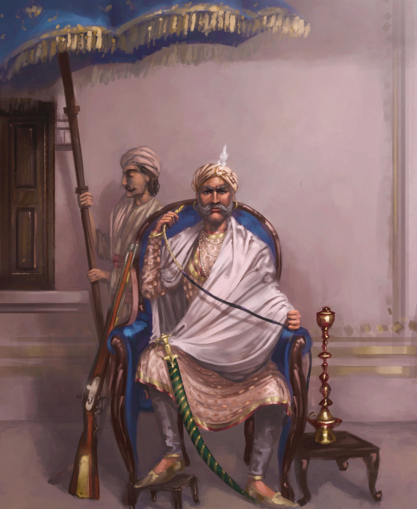
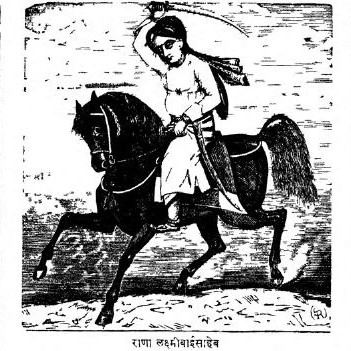

Core Content & PYQ Alignment
70th BPSC PYQ
"First War of Indian Independence": The 70th BPSC referred to 1857 as the "First Indian War of Independence" — the nationalist terminology (used by V.D. Savarkar). BPSC uses multiple names for this event: "Sepoy Mutiny" (colonial), "Great Rebellion" (neutral), "First War of Independence" (nationalist). Know all three.
70th BPSC PYQ
Leader ↔ place matching: The 70th asked to match 1857 authors with books, and also asked about Birsa Munda's revolt (Chhotanagpur — NOT Champaran). The same matching format applies to 1857 leaders ↔ their places of revolt. Kunwar Singh ↔ Jagdishpur is the Bihar-specific high-yield fact.
BIHAR PYQ
Kunwar Singh is Bihar's 1857 icon: Kunwar Singh, the 80-year-old zamindar of Jagdishpur (Ara, Bhojpur district), led the revolt in Bihar. He fought across Bihar, UP (relieved Azamgarh), and MP. He died on April 26, 1858, mortally wounded in his final battle. This is the highest-yield Bihar-specific fact for this topic.
💡 Deep-dive ready: Complete battle-by-battle analysis with timeline, causes (political/economic/social/military/religious), leaders table, Bihar's role (Kunwar Singh's campaigns), consequences (Government of India Act 1858), and 7 exam predictions:
Revolt of 1857 Master Detail →
A. Causes of the Revolt of 1857 — Five Categories
BPSC asks "Which was NOT a cause?" or "Which was the immediate cause?" Know all five categories and the specific grievances within each.
| Category | Specific Grievances |
|---|---|
| 1. Political | Doctrine of Lapse (Dalhousie): Jhansi, Satara, Nagpur annexed; Awadh annexed (1856, misgovernance); pension of Nana Saheb discontinued; Bahadur Shah Zafar told his heirs would not use the title "King" |
| 2. Economic | Land revenue pressure (Permanent Settlement, Ryotwari over-assessment); loss of livelihood for artisans (deindustrialisation); ruin of traditional handicrafts; exploitation of peasants and zamindars |
| 3. Social & Religious | Interference in Indian customs; abolition of sati (Bentinck 1829) seen as interference; legalisation of Hindu widows' remarriage (1856); fear of forced Christian conversion; missionaries active |
| 4. Military | Indian sepoys discriminated against in pay and promotion; foreign service allowance (batta) abolished; Enfield rifle greased cartridges (cow + pig fat); sepoys required to serve overseas (loss of caste) |
| 5. Immediate | Introduction of the Enfield rifle with greased cartridges (cow + pig fat); Mangal Pandey's revolt at Barrackpore (March 29, 1857); 85 sepoys court-martialled at Meerut (May 9, 1857) |
🧠 Mnemonic — Causes "P-E-S-M-I":
Political (Doctrine of Lapse, annexations) → Economic (land revenue, deindustrialisation) → Social/Religious (interference in customs, conversion fears) → Military (sepoys discriminated, greased cartridges) → Immediate (greased cartridges, Mangal Pandey).
"PESMI: the five reasons why 1857 happened."
Political (Doctrine of Lapse, annexations) → Economic (land revenue, deindustrialisation) → Social/Religious (interference in customs, conversion fears) → Military (sepoys discriminated, greased cartridges) → Immediate (greased cartridges, Mangal Pandey).
"PESMI: the five reasons why 1857 happened."

The Indian Rebellion of 1857 — also known as the First War of Indian Independence (Savarkar's term), the Sepoy Mutiny (colonial term), or the Great Rebellion. It began at Meerut on May 10, 1857.
B. The 1857 Leaders — Master Table EXAM CORE
| Leader | Place of Revolt | Background | Fate |
|---|---|---|---|
| Bahadur Shah Zafar | Delhi (symbolic head) | Last Mughal Emperor (82 years old) | Tried, exiled to Rangoon (Burma), died 1862 |
| Kunwar Singh 🔶 | Jagdishpur, Bihar | 80-year-old zamindar of Jagdishpur (Ara) | Mortally wounded; died April 26, 1858 at Jagdishpur |
| Rani Lakshmibai | Jhansi | Queen of Jhansi; state annexed by Doctrine of Lapse (1853) | Died in battle at Gwalior, June 17, 1858 |
| Nana Saheb | Kanpur (Cawnpore) | Adopted son of last Peshwa; pension discontinued | Disappeared after the revolt; fate unknown |
| Tantia Tope | Kanpur, then Gwalior | Nana Saheb's general; brilliant military leader | Captured and executed, April 18, 1859 |
| Begum Hazrat Mahal | Lucknow (Awadh) | Wife of deposed Nawab Wajid Ali Shah | Escaped to Nepal; died in Kathmandu, 1879 |
| Mangal Pandey | Barrackpore (near Calcutta) | Sepoy of 34th Native Infantry; first to rebel | Hanged April 8, 1857 (before the main revolt) |
| Khan Bahadur Khan | Bareilly | Grandson of Hafiz Rahmat Khan (Rohilla chief) | Executed after the revolt |

Raja Kunwar Singh — the 80-year-old zamindar of Jagdishpur (Ara, Bhojpur district, Bihar), who led the 1857 Revolt in Bihar. He fought across Bihar, UP, and MP, and died mortally wounded on April 26, 1858.

Rani Lakshmibai of Jhansi — one of the most iconic figures of the 1857 Revolt. Her state was annexed by Lord Dalhousie under the Doctrine of Lapse (1853). She died in battle at Gwalior on June 17, 1858, fighting dressed as a man.
C. The Timeline of the Revolt CHRONOLOGY
| Date | Event |
|---|---|
| March 29, 1857 | Mangal Pandey attacks British officers at Barrackpore — the first act of revolt |
| April 8, 1857 | Mangal Pandey hanged |
| May 10, 1857 | 85 sepoys of 3rd Native Cavalry break out at Meerut — the full-scale revolt begins |
| May 11, 1857 | Sepoys reach Delhi; Bahadur Shah Zafar declared symbolic leader |
| June 1857 | Revolt spreads to Kanpur (Nana Saheb), Jhansi (Rani Lakshmibai), Lucknow (Begum Hazrat Mahal), and Bihar (Kunwar Singh) |
| September 1857 | British recapture Delhi; Bahadur Shah Zafar captured |
| April 26, 1858 | Kunwar Singh dies mortally wounded at Jagdishpur |
| June 17, 1858 | Rani Lakshmibai dies in battle at Gwalior |
| April 18, 1859 | Tantia Tope captured and executed — the effective end of the revolt |
| November 1, 1858 | Queen's Proclamation: EIC rule ends; Crown takes over; Lord Canning becomes first Viceroy |